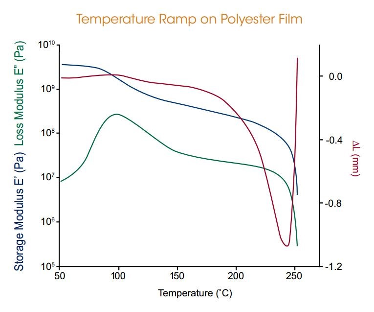
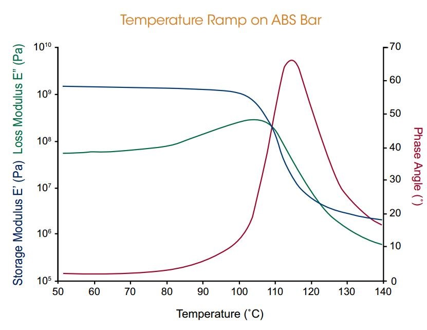

With its unique Force Rebalance Transducer (FRT), the ARES-G2 rheometer is the only rotational rheometer capable of performing linear Dynamic Mechanical Analysis (DMA)
on solids in bending, tension and compression. Axial sample deformation is applied by driving the high sensitivity FRT in controlled strain sinusoidal oscillation,
unlocking all new capabilities for solids testing.
Polyester Film in Tension Mode:
An oscillation temperature ramp was performed on a 50 μm thick PET film using the tension geometry over a temperature range of 50 °C to 250 °C. Two major transitions are observed: a glass transition about 109 °C, and melting at 234 °C. The material exhibits a significant shrinkage, as shown in the change of length signal ΔL, above the glass transition.

ABS in 3-Point Bending Mode:
The benefits of both Axial Force Control and AutoStrain are highlighted in this oscillation temperature ramp on an ABS bar tested in 3-point bend geometry. Axial Force Control moves the cross-head such that the clamp maintains continuous contact with the sample. This contact force is adjusted throughout the test to track thermal expansion and large changes in the material’s modulus during the glass transition, preventing sample bowing. AutoStrain is also used to adjust the input strain, maintaining an optimal oscillation force under all conditions. These features work in concert to ensure the highest quality data on all samples and conditions with minimal experimental optimization.
